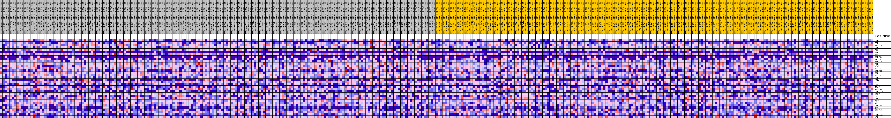
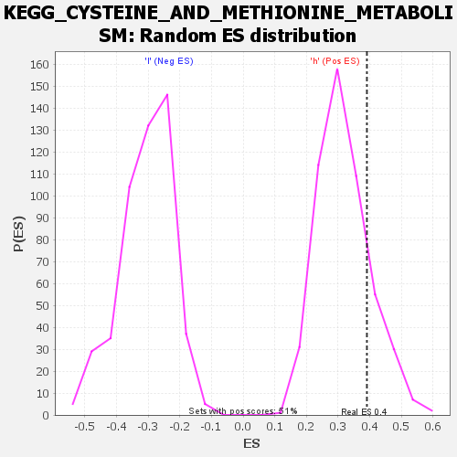

| | | Dataset | VCAN.VCAN.cls#h_versus_l.VCAN.cls#h_versus_l_repos |
| Phenotype | VCAN.cls#h_versus_l_repos |
| Upregulated in class | h |
| GeneSet | KEGG_CYSTEINE_AND_METHIONINE_METABOLISM |
| Enrichment Score (ES) | 0.3909234 |
| Normalized Enrichment Score (NES) | 1.2351855 |
| Nominal p-value | 0.18145956 |
| FDR q-value | 0.9552014 |
| FWER p-Value | 0.975 |
Table: GSEA Results Summary
 Fig 1: Enrichment plot: KEGG_CYSTEINE_AND_METHIONINE_METABOLISM
Fig 1: Enrichment plot: KEGG_CYSTEINE_AND_METHIONINE_METABOLISM
Profile of the Running ES Score & Positions of GeneSet Members on the Rank Ordered List
| SYMBOL | TITLE | RANK IN GENE LIST | RANK METRIC SCORE | RUNNING ES | CORE ENRICHMENT | | 1 | LDHB | na | 926 | 0.099 | 0.0460 | Yes |
| 2 | CTH | na | 1501 | 0.088 | 0.0915 | Yes |
| 3 | AHCYL1 | na | 1839 | 0.083 | 0.1383 | Yes |
| 4 | LDHA | na | 2289 | 0.078 | 0.1797 | Yes |
| 5 | SMS | na | 3378 | 0.068 | 0.2034 | Yes |
| 6 | BHMT | na | 3565 | 0.067 | 0.2427 | Yes |
| 7 | AHCY | na | 4280 | 0.061 | 0.2688 | Yes |
| 8 | DNMT3L | na | 4985 | 0.057 | 0.2921 | Yes |
| 9 | MAT1A | na | 6087 | 0.050 | 0.3040 | Yes |
| 10 | TRDMT1 | na | 6737 | 0.047 | 0.3218 | Yes |
| 11 | AMD1 | na | 6745 | 0.047 | 0.3513 | Yes |
| 12 | MTAP | na | 7293 | 0.044 | 0.3691 | Yes |
| 13 | MAT2B | na | 8836 | 0.036 | 0.3642 | Yes |
| 14 | DNMT3B | na | 9182 | 0.035 | 0.3799 | Yes |
| 15 | SRM | na | 10677 | 0.028 | 0.3706 | Yes |
| 16 | MAT2A | na | 11210 | 0.026 | 0.3773 | Yes |
| 17 | SDS | na | 11972 | 0.023 | 0.3779 | Yes |
| 18 | LDHC | na | 12033 | 0.022 | 0.3909 | Yes |
| 19 | GOT2 | na | 13481 | 0.017 | 0.3754 | No |
| 20 | CDO1 | na | 15834 | 0.009 | 0.3383 | No |
| 21 | IL4I1 | na | 16524 | 0.007 | 0.3300 | No |
| 22 | ENOPH1 | na | 18268 | 0.002 | 0.2995 | No |
| 23 | LDHAL6A | na | 23466 | -0.007 | 0.2097 | No |
| 24 | MPST | na | 23953 | -0.008 | 0.2060 | No |
| 25 | CBS | na | 27243 | -0.017 | 0.1573 | No |
| 26 | DNMT1 | na | 28521 | -0.021 | 0.1472 | No |
| 27 | APIP | na | 30404 | -0.026 | 0.1295 | No |
| 28 | ADI1 | na | 32984 | -0.033 | 0.1038 | No |
| 29 | DNMT3A | na | 35318 | -0.039 | 0.0864 | No |
| 30 | TAT | na | 42449 | -0.058 | -0.0057 | No |
| 31 | AHCYL2 | na | 48907 | -0.079 | -0.0724 | No |
| 32 | GOT1 | na | 50837 | -0.088 | -0.0516 | No |
| 33 | LDHAL6B | na | 51459 | -0.091 | -0.0049 | No |
| 34 | MTR | na | 54274 | -0.116 | 0.0180 | No |
Table: GSEA details [plain text format]

Fig 2: KEGG_CYSTEINE_AND_METHIONINE_METABOLISM
Blue-Pink O' Gram in the Space of the Analyzed GeneSet

Fig 3: KEGG_CYSTEINE_AND_METHIONINE_METABOLISM: Random ES distribution
Gene set null distribution of ES for KEGG_CYSTEINE_AND_METHIONINE_METABOLISM